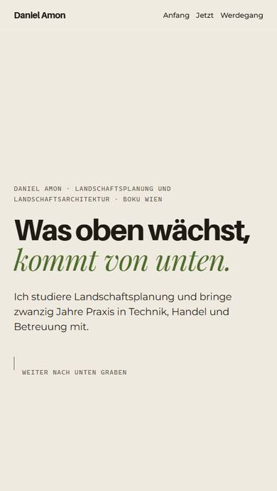
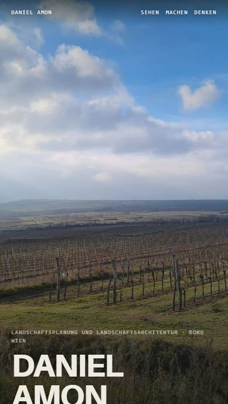
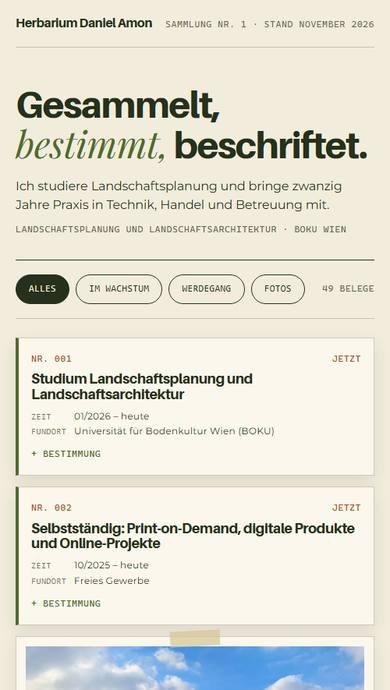
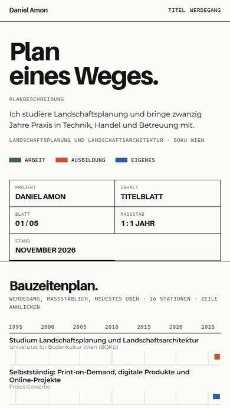

Variante 1
Bodenprofil
Scrollen heißt graben: von der Auflage (jetzt) bis zum Ausgangsgestein (Anfang).
Entwürfe · Daniel Amon · Stand November 2026
Tippe eine Variante an und klick dich durch. In jeder Variante findest du unten links einen Umschalter (1 bis 4) und den Weg zurück hierher. Markiere deinen Favoriten mit dem Stern.
Entwurf · nur zum Ansehen

Variante 1
Scrollen heißt graben: von der Auflage (jetzt) bis zum Ausgangsgestein (Anfang).


Variante 3
Alles ist ein beschrifteter Beleg: Fotos, Stationen und Vorhaben, filterbar.
